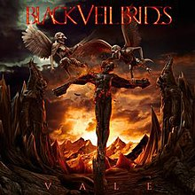
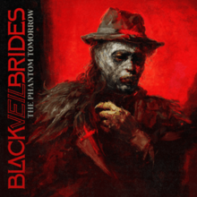
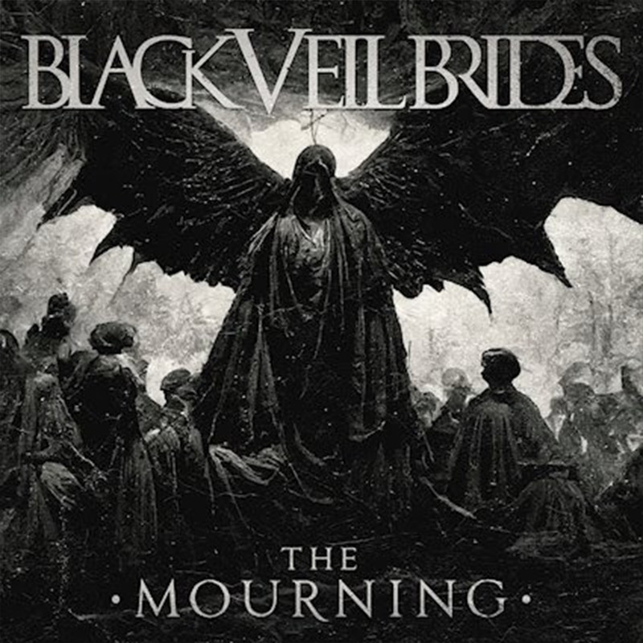

Black Veil Brides!
We Stich These Wounds
July 20, 2010
Set The World on Fire
June 14, 2011
Wretched and Divine: The Story of the Wild Ones
January 8, 2013
Black Veil Brides
October 27, 2014

Vale
January 12, 2018

The Phantom Tomorrow
October 29, 2021

The Mourning
October 21, 2022
Back to Projects Overview.